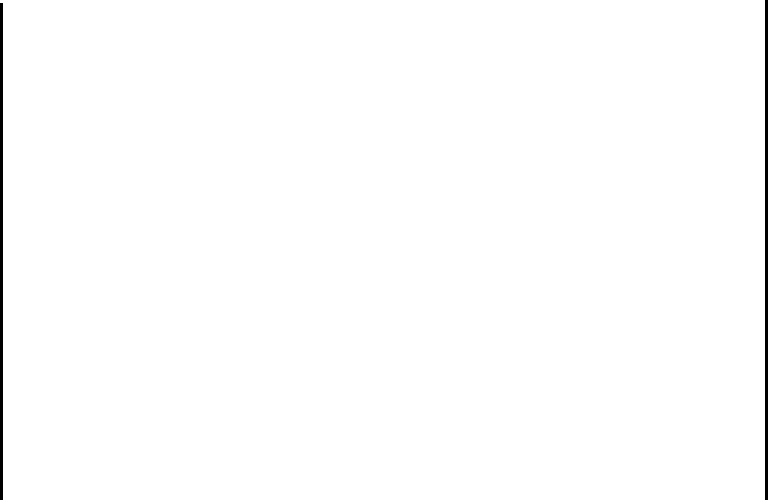
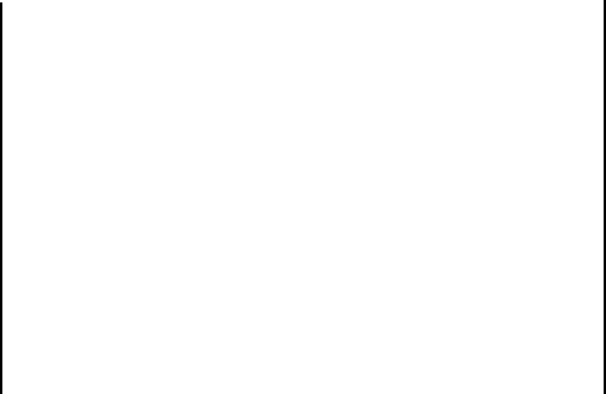
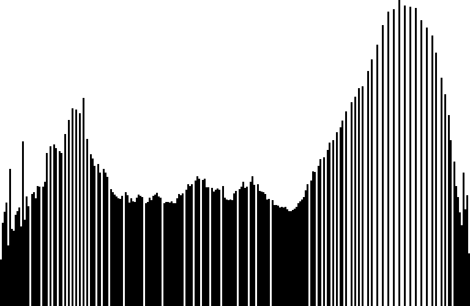
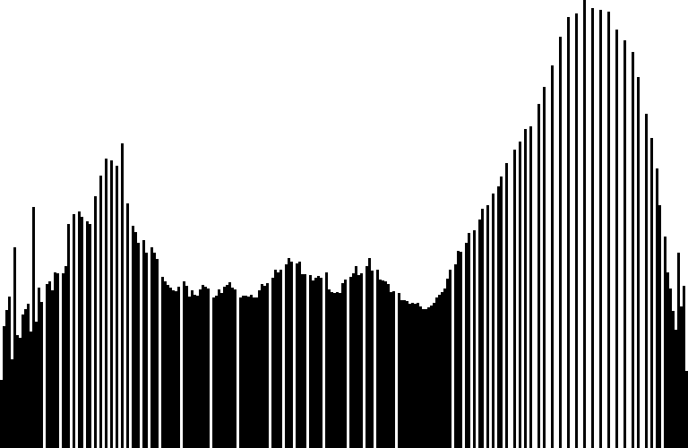

Editace obrazu
Tato část je věnována editaci obrazu na úrovni jasových hodnot jednotlivých pixelů v rastru.
Histogram a monadické operace
Jednoduše, histogram zaznamenává počet pixelů o dané jasové hodnotě v obraze. Znalost jejich distribuce může pomoci nalézt vhodné paramtery pro další editaci. Hodí se tedy vědět, jak jednotlivé operace ovlivňují podobu histogramu.
Původní obraz je zde označen jako $f(x, y)$, obraz po transformaci jako $f'(x, y)$.


 



 

Ekvalizace histogramu a histogram matching
Ilustrace ekvalizace histogramu - mapování kumulativní distribuční funkce (cdf) příslušející vstupnímu obrazu na lineární cdf a poté zpětnou transformaci jasových hodnot, celou proceduru ilustruje následující obrázek.
Operace histogram matching je analogická ekvalizaci výše, pouze je lineární kumulativní distribuční funkce (linear cdf) nahrazena cdf příslušející obrazu, jehož rozložení intenzit se snažíme namapovat na originální obraz. V případě barevných obrázků je možné postupovat po složkách nezávisle, viz ukázka níže.

Prostorové transformace
Pod pojmem transformace se neskrývá nic nečekaného, jedná se transformaci obrazu v prostoru, např:
- otočení (rotation)
- změna velikosti (scale)
- zkosení (shear)
- posun (translation)
- perspektivní transformace
Jednotlivé transformační operace lze reprezentovat pomocí matic a lze je roztřídit do několika kategorií dle vlastností, které v obraze zachovávají.
TODO
Liquid scale
Má smysl se zabývat i transformacemi, které nespadají do kategorií výše, na ukázku je zde uvedeno video z kurzu Introduction to Computational Thinking - MIT 18.S191 které přibližuje metodu škálování obrazu podobnou Liquid rescale (youtube).
Editace v gradientní oblasti
Jako zajímavost lze uvést, že existují automatické metody pro bezešvé sešívání obrazu založené na editaci v gradientní oblasti.


TODO demo
Jiné metody
Na tomto místě se hodí zmínit také filtraci ve frekvenční oblasti a n-bodovou transformaci.